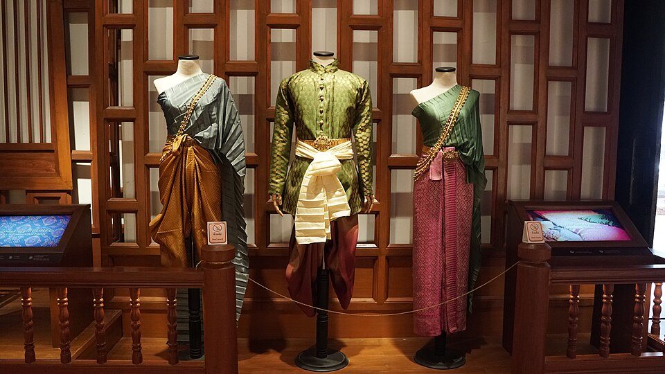
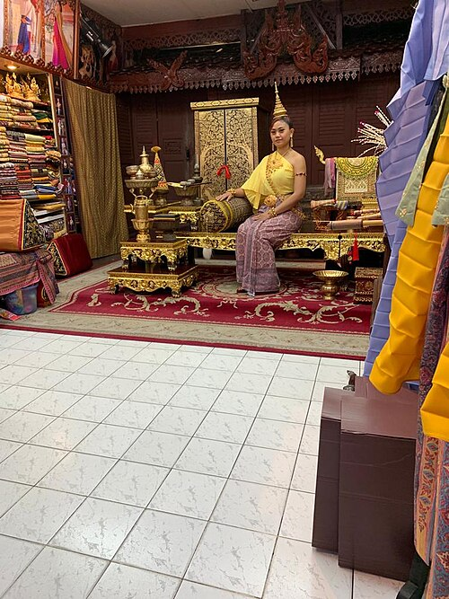
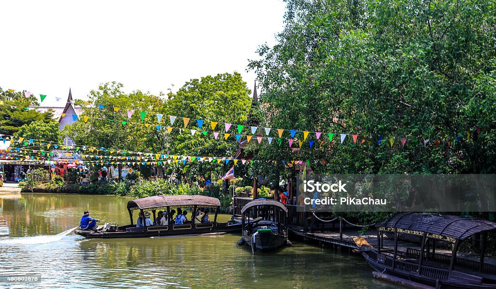
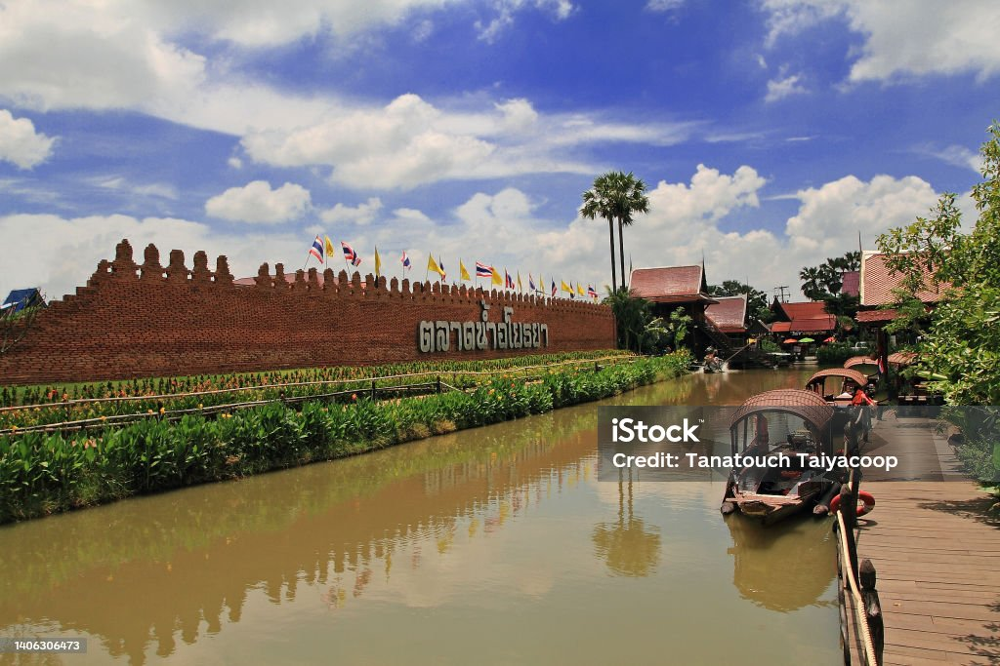
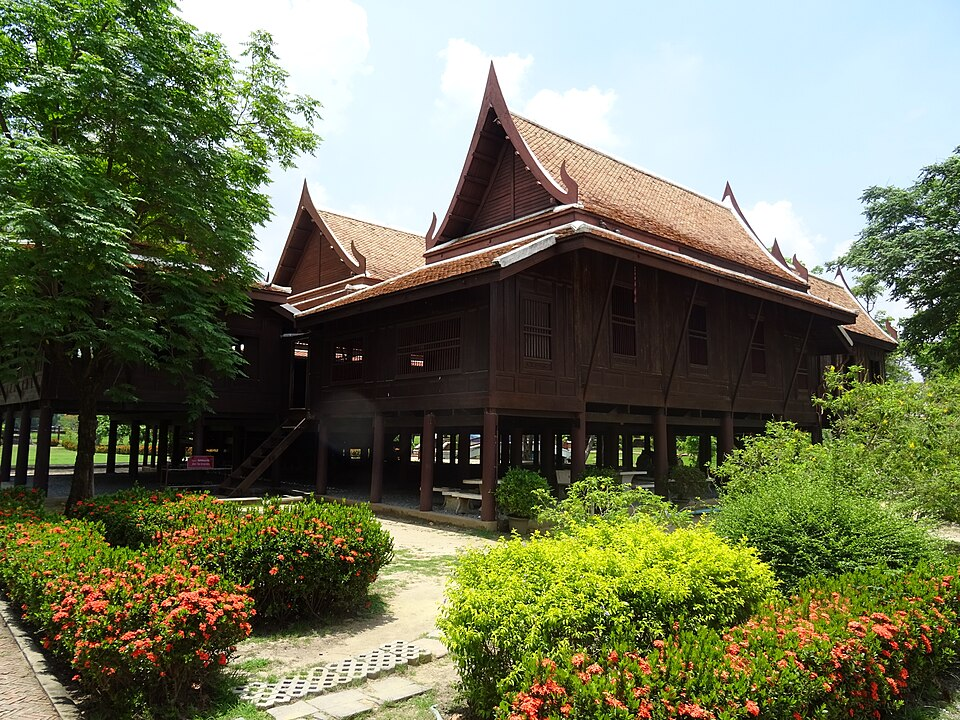

การแต่งกาย อาหาร บ้านเรือน การทำงาน และการใช้ชีวิตของผู้คน ล้วนเป็นส่วนหนึ่งของเรื่องราว ที่ทำให้เราเข้าใจสังคมอยุธยา
สังคมกรุงศรีอยุธยาประกอบด้วยผู้คน หลากหลายกลุ่ม ทั้งชาวบ้าน พ่อค้า ขุนนาง พระสงฆ์ และผู้คนจากต่างถิ่น การแต่งกาย อาหาร ที่อยู่อาศัย การประกอบอาชีพ และชีวิตประจำวัน จึงมีความหลากหลายตามฐานะ หน้าที่ และสภาพแวดล้อมของผู้คน

การแต่งกายในสมัยอยุธยา มีความแตกต่างกันตามเพศ ฐานะทางสังคม และโอกาส
ผู้หญิงนิยมใช้ผ้านุ่งหรือผ้าซิ่น และมีผ้าห่มหรือผ้าสไบ ส่วนผู้ชายมีการนุ่งผ้าและใช้ผ้า ตามลักษณะการดำเนินชีวิต
เครื่องแต่งกายจึงไม่ได้เป็นเพียง สิ่งที่ใช้ในชีวิตประจำวัน แต่ยังสะท้อนวัฒนธรรม และสถานะของผู้สวมใส่
เครื่องแต่งกาย
ผ้าสไบเป็นผ้าที่ใช้พาดบริเวณ ไหล่หรือส่วนบนของร่างกาย และปรากฏในภาพจำเกี่ยวกับ การแต่งกายของหญิงไทยในอดีต
รูปแบบและวัสดุของผ้า อาจแตกต่างกันตามฐานะ และโอกาสในการแต่งกาย
การทอผ้าและการใช้ผ้า ยังเป็นส่วนหนึ่งของภูมิปัญญา ที่สืบทอดต่อกันมา
ภูมิปัญญาการทอผ้า
อยุธยาตั้งอยู่ท่ามกลางแม่น้ำ หลายสาย ทำให้การเดินทาง และการค้าขายทางน้ำ มีความสำคัญอย่างมาก
เรือถูกใช้ในการเดินทาง ขนส่งสินค้า ติดต่อระหว่างชุมชน และทำกิจกรรมต่าง ๆ ในชีวิตประจำวัน
แม่น้ำจึงไม่ได้เป็นเพียง เส้นทางคมนาคม แต่ยังเป็น ส่วนหนึ่งของวิถีชีวิตของชาวอยุธยา
ชีวิตริมน้ำ
ตลาดเป็นพื้นที่สำคัญของชุมชน ใช้สำหรับซื้อขายอาหาร เครื่องใช้ เสื้อผ้า และสินค้าต่าง ๆ
อยุธยาเป็นศูนย์กลางการค้า ที่มีผู้คนจากหลายพื้นที่ เดินทางเข้ามาแลกเปลี่ยนสินค้า
บรรยากาศของตลาดจึงสะท้อน ความหลากหลายของผู้คน และวัฒนธรรมในเมืองหลวง
การค้าขาย
บ้านเรือนของผู้คนในอดีต มีการปรับให้เหมาะกับ สภาพภูมิอากาศและพื้นที่ริมน้ำ
บ้านไม้ยกพื้นเป็นรูปแบบหนึ่ง ที่ช่วยให้บ้านเหมาะกับพื้นที่ ซึ่งอาจมีน้ำหลากตามฤดูกาล
ลักษณะบ้านยังสะท้อน ความสัมพันธ์ระหว่างผู้คน กับธรรมชาติและชุมชน
เรือนไทยอาหารของผู้คนในอยุธยา มีความสัมพันธ์กับทรัพยากร จากแม่น้ำและพื้นที่เกษตรกรรม
ปลา กุ้ง ผัก สมุนไพร และข้าวเป็นวัตถุดิบสำคัญ ที่สามารถนำมาปรุงอาหาร ได้หลากหลายรูปแบบ
นอกจากนี้การติดต่อค้าขาย กับผู้คนต่างชาติยังมีส่วน ทำให้วัฒนธรรมอาหาร ของอยุธยามีความหลากหลาย
อาหารและภูมิปัญญาผู้คนจำนวนมากประกอบอาชีพ เกี่ยวข้องกับการเกษตร โดยเฉพาะการทำนา ซึ่งเป็นอาชีพสำคัญของสังคม
แม่น้ำและคลองมีบทบาทสำคัญ ในการเดินทาง ขนส่งสินค้า และเชื่อมต่อชุมชนต่าง ๆ
งานทอผ้า เครื่องจักสาน เครื่องปั้นดินเผา และงานช่าง เป็นส่วนหนึ่งของภูมิปัญญา ของชุมชน
ครอบครัวและชุมชนมีบทบาทสำคัญ ในการดำเนินชีวิต การประกอบอาชีพ และการถ่ายทอดความรู้ จากรุ่นหนึ่งไปสู่อีกรุ่นหนึ่ง
พระพุทธศาสนามีบทบาทสำคัญ ต่อสังคมอยุธยา วัดเป็นทั้ง ศาสนสถานและพื้นที่ ที่ผู้คนมาพบปะทำกิจกรรม
ผู้คนมีศิลปะและการแสดง หลายรูปแบบ ทั้งดนตรี การละเล่น และการแสดง ที่เกี่ยวข้องกับประเพณี
ช่างฝีมือมีบทบาทในการสร้าง เครื่องใช้ งานศิลปกรรม เครื่องปั้นดินเผา และสิ่งของสำหรับชุมชน